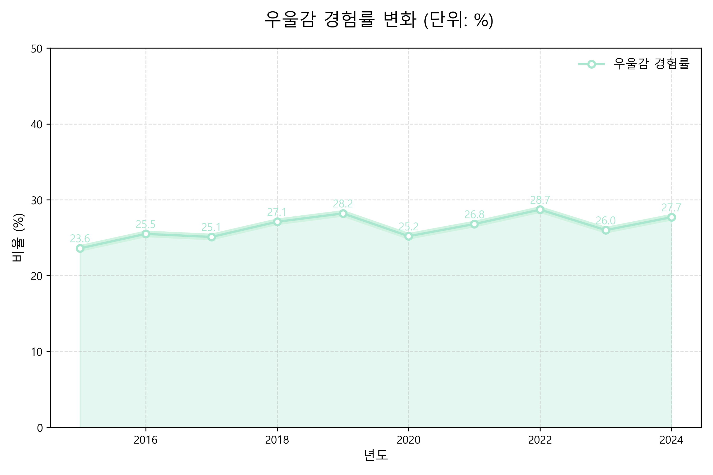

<section id="depression" class="full-section home-hero bg-gray">
  <div class="depression-wrapper">
    
    <!-- 입력 영역 -->
    <div class="form-area">
      <h3>📊 또래 우울감 조회</h3>
      <label>나이: <input type="number" id="age" min="10" max="30"></label>
      <label>성별:
        <select id="gender">
          <option value="male">남학생</option>
          <option value="female">여학생</option>
        </select>
      </label>
      <label>연도: <input type="number" id="year" value="2023"></label>
      <span class="note">(2016~2024년 사이)</span>
      <button onclick="getDepression()">📥 조회하기</button>
    </div>

    <!-- 이미지 영역 -->
    <div class="graph-area">
      <h3>👋 청소년 우울감 경험률 그래프</h3>
      
    </div>

  </div>
</section>
